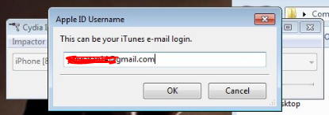
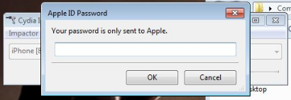
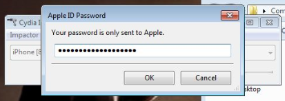
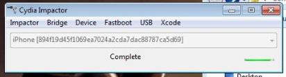
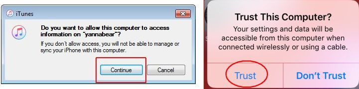

INSTALL IPA VIA CYDIA IMPACTOR
Cydia Impactor is a GUI tool for working with mobile devices. It has features already, but is still very much a work-in-progress. It is developed by saurik.NOTE:
- Delete pokemon go app if previously installed via direct install (OTA).
- You need to re-impact every 7 days.
- Revoke certificate first if you need to re-impact with in 7 days, like if there's a new update.
- Making a new user (administrator) on ur computer is recommended to avoid errors and do the impacting in there.
How to Install:
- Make sure that you have the latest version of iTunes installed on your computer.
- Remove the original app from your iDevice.
- Download the latest Cydia Impactor .
- Download the latest tweaked IPA file, then launch Cydia Impactor.
- Connect your iDevice to the PC using the USB cable.
- Drag and drop the downloaded IPA file onto it. Or you can click Device> Install Package to install the IPA.
- Impactor will asks for your Apple ID username and password (guide on next step) which are used to fetch the developer certificate from the Apple servers. 
- This step is the most important, now go to https://appleid.apple.com/#!&page=signin then log-in, scroll down to Security> APP-SPECIFIC PASSWORDS and generate one by choosing any label word, after that you will see a password like XXXX-XXXX-XXXX then copy this password. If ur two-factor authentication is disabled, use ur apple id password instead. 
- Switch to Cydia again and paste the generated app-specific password after you put your Apple ID username. Keep the app-specific generated password so you don't need to generate again next time u impact. 
- Be patient and wait for Impactor to perform all of the work. Once you see the "Complete" message on it, disconnect ur iDevice from PC then unlock your iPhone screen and go to Settings> General> Device Management. Tap the developer Apple ID and TRUST it. Now you can launch the app! 
Make sure to select TRUST if prompted on both computer and iDevice. If everything goes fine, Cydia Impactor should detects your iDevice.
